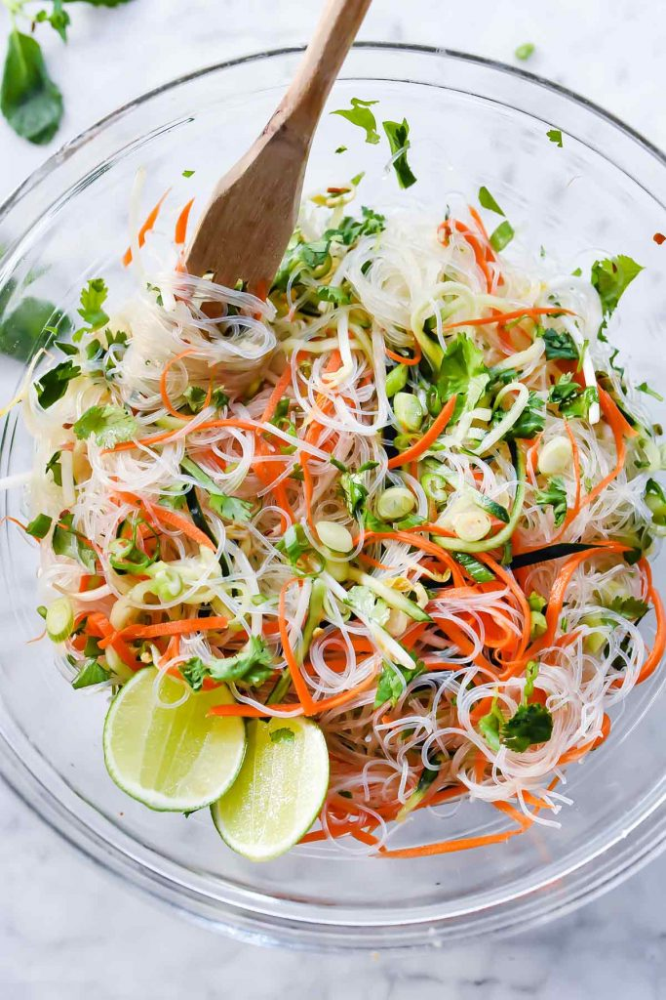

Fresh and Easy Vietnamese Noodle Salad
This light and fresh Asian salad filled with cucumber, carrot and bean sprouts is a tangy side dish for grilled meats and poultry or eaten as a main dish on its own.
Ingredients
- 12 ounces thin Asian vermicelli noodles such as rice stick or mung bean
- carrots shredded
- 2 cucumbers seeded and shredded
- green onion chopped
- 1/2 cups fresh bean sprouts
- 1/3 cup chopped cilantro
- 1/2 cup fish sauce
- 1/2 cup seasoned rice vinegar
- 3 tablespoons sugar
- 2 cloves garlic pressed or minced
- 1/4 teaspoon crushed red pepper
- Lime
Instructions
- Soften the vermicelli noodles in a large bowl by covering with boiling water and soaking for 3-4 minutes or until tender. Rinse under cold water, drain, and add to a large bowl. Add the shredded carrots, cucumbers, bean sprouts and chopped cilantro to the noodles.
- In a glass jar fitted with a lid or a bowl, mix together the fish sauce, rice vinegar, sugar, garlic and crushed red pepper. Pour 3/4 of the dressing over the noodles and toss to coat. Add more dressing if desired. Sprinkle with more cilantro and green onion and a squeeze of lime if desired. Salad can be made ahead and refrigerated overnight, however if making ahead, add the cilantro just before serving.
